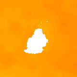
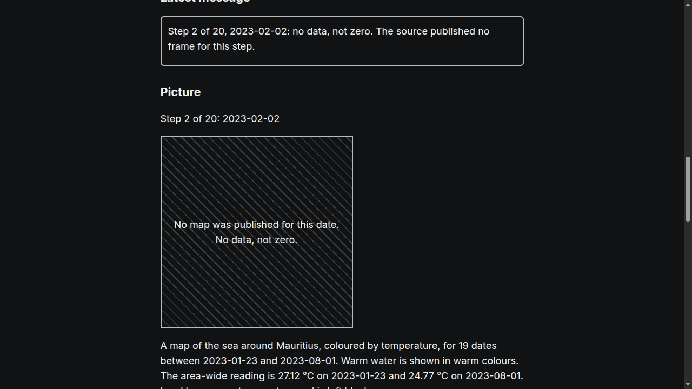

1 of 7
Earth, Out Loud
Hear a NASA Earth data story. Know when there is no data.
Working title. NASA Space Apps 2026, Port Louis, Mauritius. Challenge: The Earth Information Jukebox.
2 of 7
The problem
- Earth data is told with pictures. People who cannot see the picture are left out.
- Sound that hides gaps, or invents notes where there is no data, is worse than silence.
- Our rule: no data is silence, and we say so.
3 of 7
Frame in, sound out

One map in, one pitch out: the average of the sea points in the box, from 27.12 °C (2023-01-23) to 24.77 °C (2023-08-01). Higher pitch is warmer water.
Data: NASA GIBS, GHRSST MUR sea surface temperature. No matching EIC visualization verified; the app says so.
4 of 7
Two sides of the same data
| Musical mode | Strict data mode |
|---|---|
| Notes snap to a scale. Values are rounded to about 0.8 °C. The app says so. | A plain tone and a click per step. Each map point is only known to within 0.15 °C. The app says so. |
The switch changes mode silently and leaves playback paused. The screen reader announces it. The app never talks over it.
5 of 7
Silence means no data

2023-02-02 is a real gap. NASA's own date list skips it, and the server returns an empty image for it.
The pitch stops. A click keeps time. One message says no data, not zero. The app waits for Continue.
The pipeline stops if the date list and the image ever disagree.
6 of 7
What the sound hides, and the honest test result
- "What the sound hides": the same readings with a coarse mapping next to the honest one. You hear what a careless mapping loses.
- Every answer in the app shows its source fact. If the record does not say, it says "Not in this record".
Test result: not yet tested with blind users. No session has been run. The listener test for "what the sound hides" has not been run either.
What has been checked: automated tests, an accessibility scan, and a real-browser run on desktop Chrome, including offline. See proof/automated-checks.md.
7 of 7
Data, credits, AI use, code
- NASA data: GHRSST Level 4 MUR SST v4.1 through NASA GIBS. 20 dates, every 10 days from 2023-01-23 to 2023-08-01, a box around Mauritius. Each colour matched exactly to NASA's colour map.
- Credits: JPL MUR MEaSUREs Project, 2015, doi:10.5067/GHGMR-4FJ04. "We acknowledge the use of imagery provided by services from NASA's Global Imagery Browse Services (GIBS), part of NASA's Earth Science Data and Information System (ESDIS)."
- AI use: AI (Claude, via Claude Code) helped write code, tests and documents. It did not create any data value, pitch or sound. Sentences are built by code from the data; a code checker rejects any number not in the data. A person has not yet signed off every sentence.
- Third-party code: Tone.js (MIT). Test and build tools: jsdom, axe-core, numpy, Pillow, jsonschema.
- Public link, no login: [to be added after deploy]